Attribution
Photo Credits
The placeholder photography on this website is openly licensed. We gratefully credit the photographers below.
Photos are from Wikimedia Commons and are used under the licenses listed (Creative Commons / public domain). Images have been resized and converted to WebP. Where a photo is licensed CC BY-SA, our resized version is shared under the same license.
-
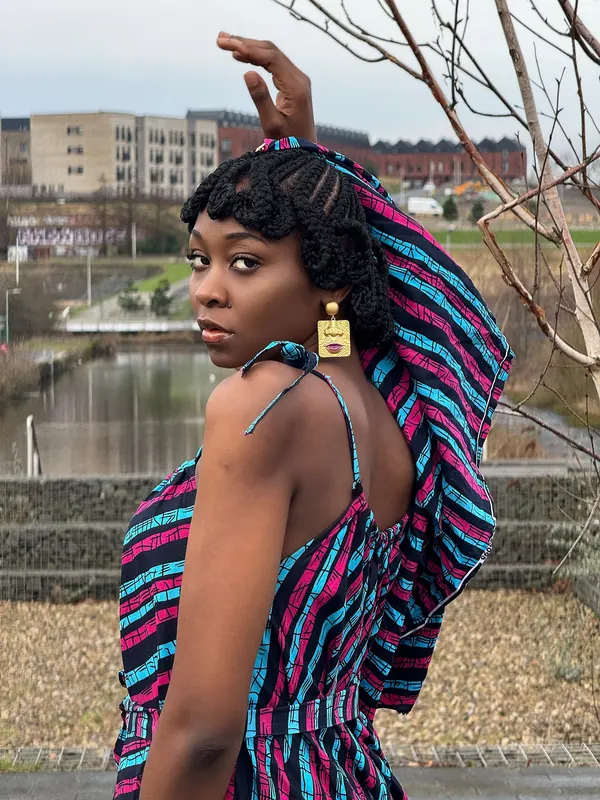
Koroba-braids-woman-scarf-portrait-june-2024-01.jpg By Melody Jacob1 · License: CC BY-SA 4.0 · Source on Wikimedia Commons
Used asbox-braids-large.webp(resized/cropped for web). -
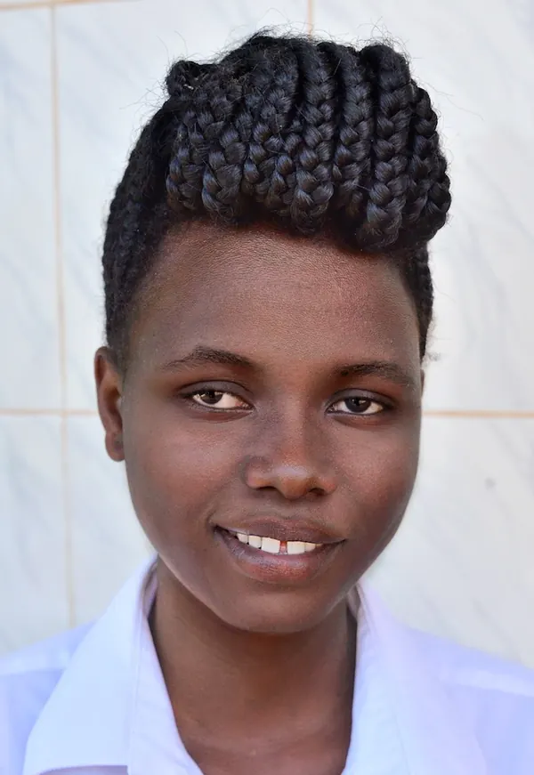
Braids, Uganda (15232009007).jpg By Rod Waddington from Kergunyah, Australia · License: CC BY-SA 2.0 · Source on Wikimedia Commons
Used asbox-braids-medium.webp(resized/cropped for web). -
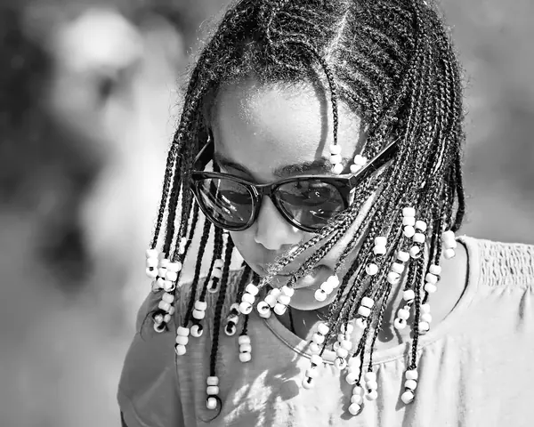
Box Braids.jpg By Randen Pederson · License: CC BY 2.0 · Source on Wikimedia Commons
Used asbox-braids-small.webp(resized/cropped for web). -
 Hair braiding (two hands hair style).jpg By Umshushima · License: CC BY-SA 4.0 · Source on Wikimedia Commons
Hair braiding (two hands hair style).jpg By Umshushima · License: CC BY-SA 4.0 · Source on Wikimedia Commons
Used asbraiding-hands.webp(resized/cropped for web). -
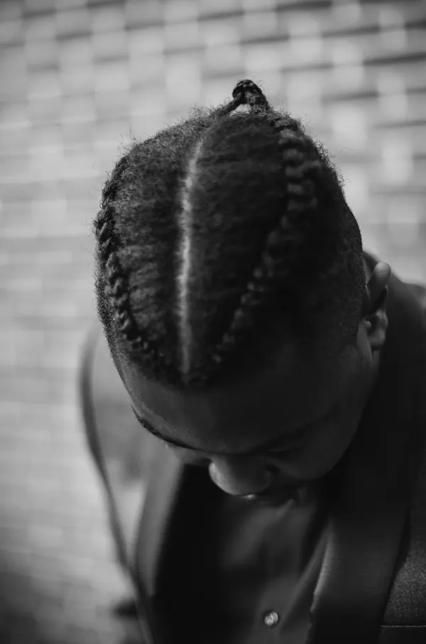
Cornrow style (Unsplash).jpg By Clem Onojeghuo clemono2 · License: CC0 · Source on Wikimedia Commons
Used ascornrows-artistic.webp(resized/cropped for web). -
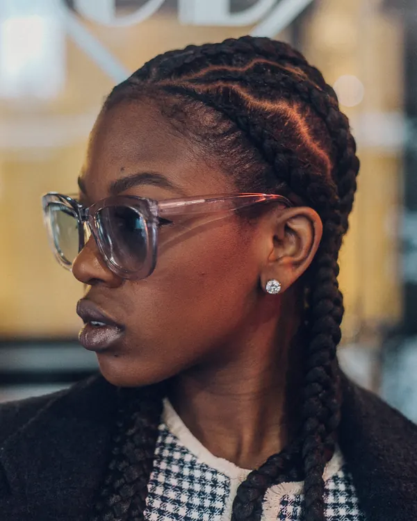
Cornrows.jpg By @photosbyphab · License: CC0 · Source on Wikimedia Commons
Used ascornrows-feed-in.webp(resized/cropped for web). -
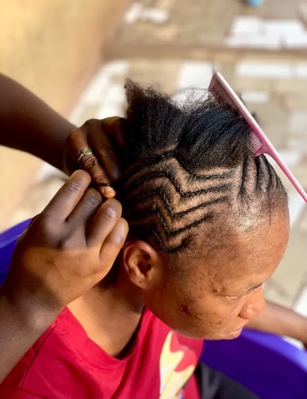
Cornrow Hairstyling.jpg By Nwonwu Uchechukwu P · License: CC BY-SA 4.0 · Source on Wikimedia Commons
Used ascornrows-process.webp(resized/cropped for web). -
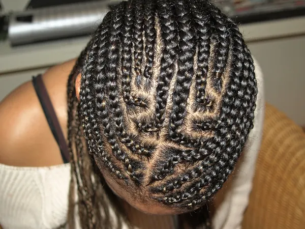
Orit's Cornrows work.jpg By Joanita Hafermalz · License: CC BY-SA 2.0 · Source on Wikimedia Commons
Used ascornrows-stitch.webp(resized/cropped for web). -
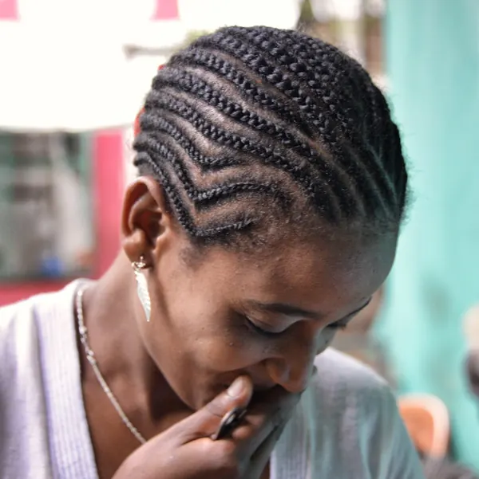
Fine Braids, Dimma (13307706094).jpg By Rod Waddington from Kergunyah, Australia · License: CC BY-SA 2.0 · Source on Wikimedia Commons
Used ascornrows-straight-back.webp(resized/cropped for web). -
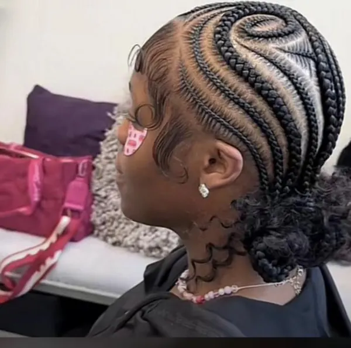
Cornrow Braid Local Hairstyle in NIGERIA.jpg By Ourlibrary · License: CC0 · Source on Wikimedia Commons
Used ascornrows-tribal.webp(resized/cropped for web). -
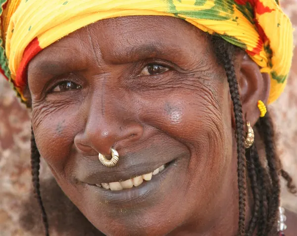
FulaniWoman2.jpg By Ferdinand Reus · License: CC BY-SA 2.0 · Source on Wikimedia Commons
Used asculture-portrait.webp(resized/cropped for web). -
 Senegalese braids.jpg By Senegal coiffure · License: CC BY-SA 4.0 · Source on Wikimedia Commons
Senegalese braids.jpg By Senegal coiffure · License: CC BY-SA 4.0 · Source on Wikimedia Commons
Used ashero-feed-in-braids.webp(resized/cropped for web). -
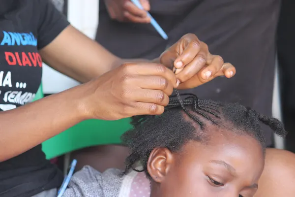
A lady braiding a child (hair style weaving) 01.jpg By Umshushima · License: CC BY-SA 4.0 · Source on Wikimedia Commons
Used askids-braiding-session.webp(resized/cropped for web). -
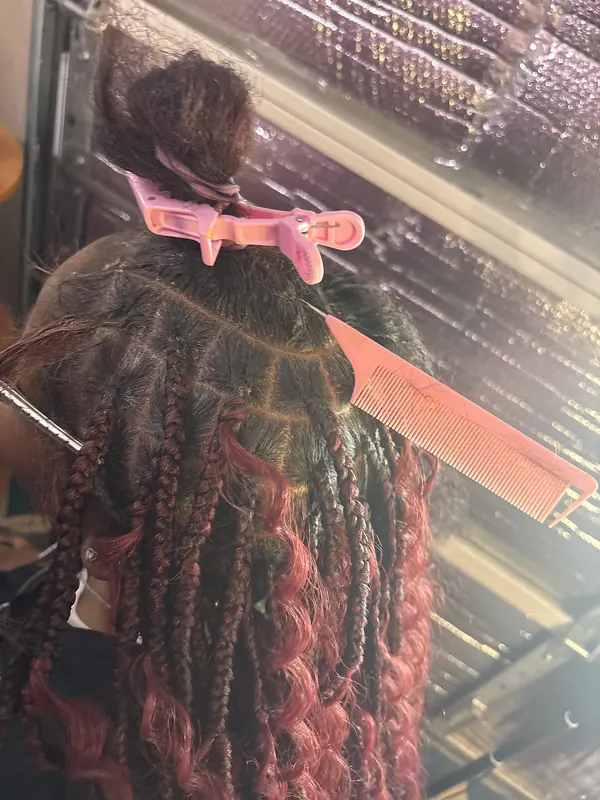
Knotless braidss.jpg By OA1101 · License: CC BY-SA 4.0 · Source on Wikimedia Commons
Used asknotless-jumbo.webp(resized/cropped for web). -
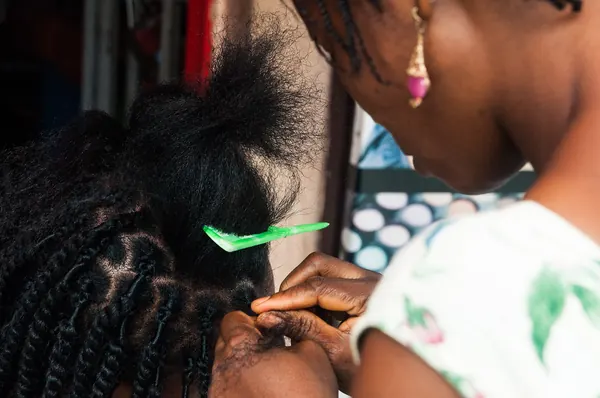
Braider at a hair salon.jpg By Adaku Nwakanma · License: CC BY-SA 4.0 · Source on Wikimedia Commons
Used asknotless-large.webp(resized/cropped for web). -
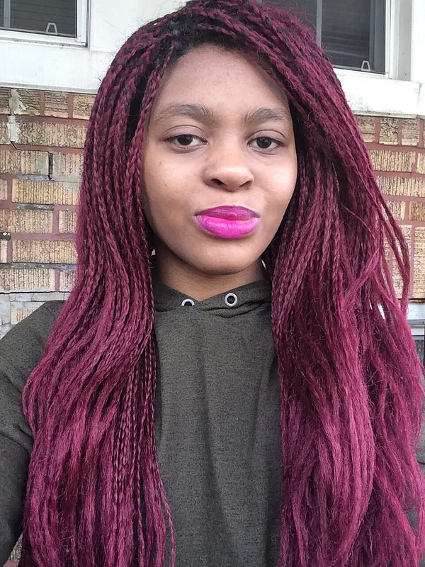
Woman with purple hair and lipstick.jpg By Broken hearted girl reacts · License: CC BY-SA 4.0 · Source on Wikimedia Commons
Used asknotless-medium.webp(resized/cropped for web). -
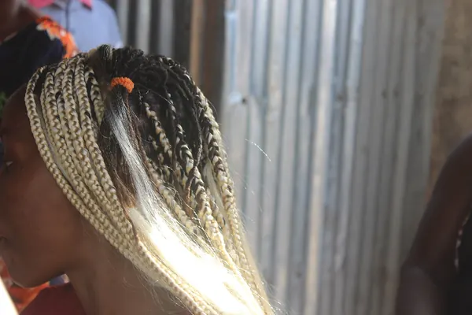
A lady on braids.jpg By Umshushima · License: CC BY-SA 4.0 · Source on Wikimedia Commons
Used asknotless-small.webp(resized/cropped for web). -
 Hair plaiting in cross river state.jpg By Otomeonoge · License: CC BY-SA 4.0 · Source on Wikimedia Commons
Hair plaiting in cross river state.jpg By Otomeonoge · License: CC BY-SA 4.0 · Source on Wikimedia Commons
Used assalon-braiding-session.webp(resized/cropped for web). -
 Hair weaving, Nigeria.jpg By Atibrarian · License: CC BY-SA 4.0 · Source on Wikimedia Commons
Hair weaving, Nigeria.jpg By Atibrarian · License: CC BY-SA 4.0 · Source on Wikimedia Commons
Used assalon-weaving.webp(resized/cropped for web). -
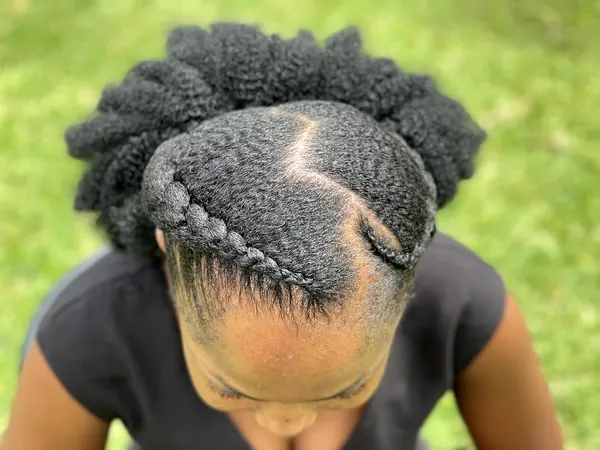
Adepa hairstyle.jpg By Uprising Man · License: CC BY-SA 4.0 · Source on Wikimedia Commons
Used asstyle-adepa.webp(resized/cropped for web). -
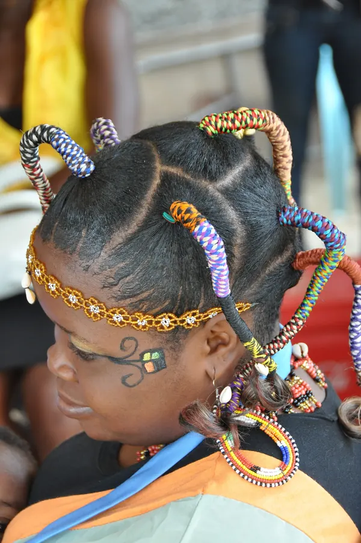
Kdfportraittresses.JPG By Photokadaffi · License: CC BY-SA 4.0 · Source on Wikimedia Commons
Used asstyle-beaded-threads.webp(resized/cropped for web). -
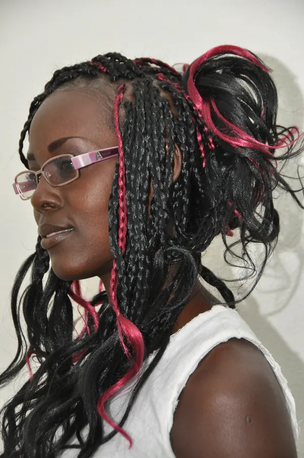
Kdfmeche02.JPG By Photokadaffi · License: CC BY-SA 4.0 · Source on Wikimedia Commons
Used asstyle-boho.webp(resized/cropped for web). -
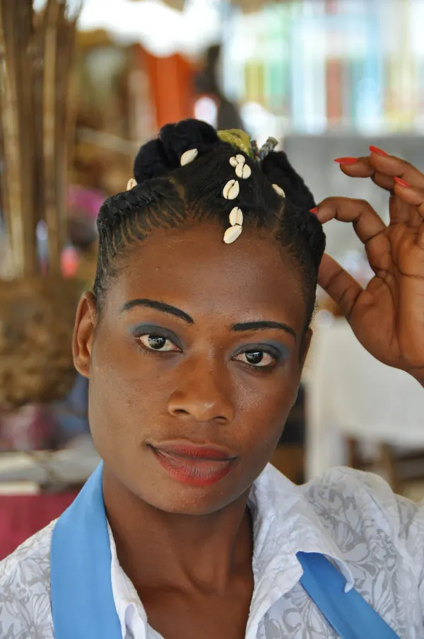
Kdftresses0.JPG By Photokadaffi · License: CC BY-SA 4.0 · Source on Wikimedia Commons
Used asstyle-fulani.webp(resized/cropped for web). -
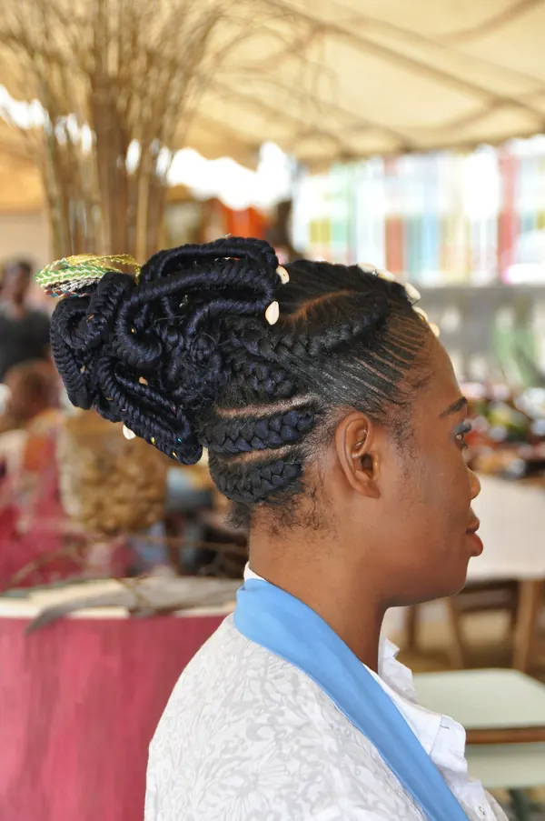
Kdftresses1.JPG By Photokadaffi · License: CC BY-SA 4.0 · Source on Wikimedia Commons
Used asstyle-goddess.webp(resized/cropped for web). -
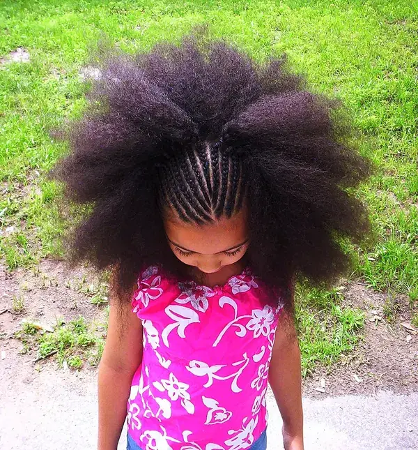
Girl in Pink With Beautiful Hair Braids creative commons (175585405).jpg By Pink Sherbet Photography from Utah, USA · License: CC BY 2.0 · Source on Wikimedia Commons
Used asstyle-kids.webp(resized/cropped for web). -
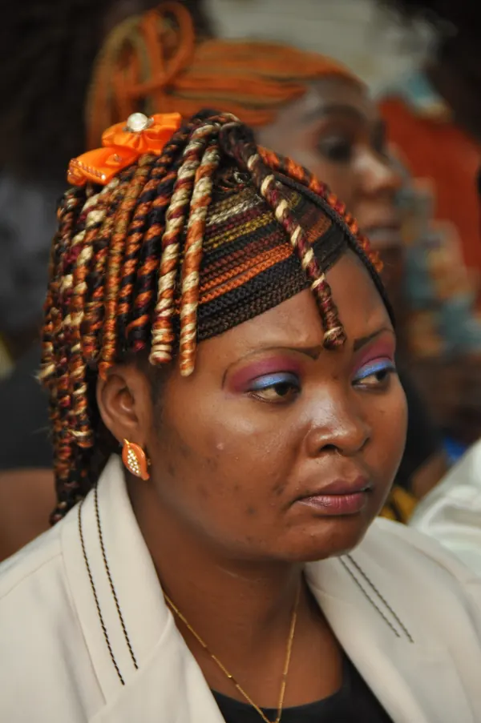
Kdfmeche11.JPG By Photokadaffi · License: CC BY-SA 4.0 · Source on Wikimedia Commons
Used astwists-marley.webp(resized/cropped for web). -
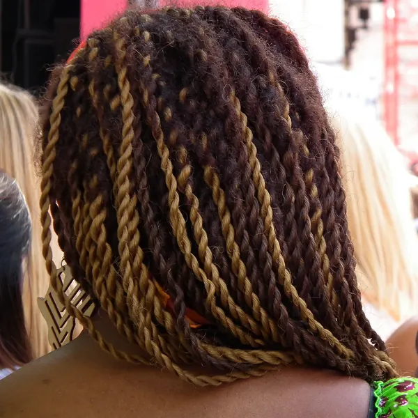
Zweifarbige Braids.JPG By 4028mdk09 · License: CC BY-SA 3.0 · Source on Wikimedia Commons
Used astwists-passion.webp(resized/cropped for web). -
African girl braids.jpg By Cestmoicarisse · License: CC BY-SA 4.0 · Source on Wikimedia Commons
Used astwists-senegalese.webp(resized/cropped for web).